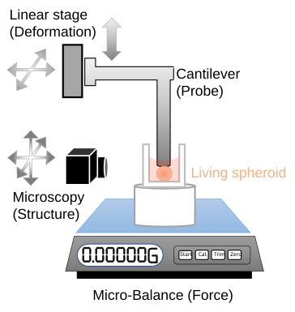
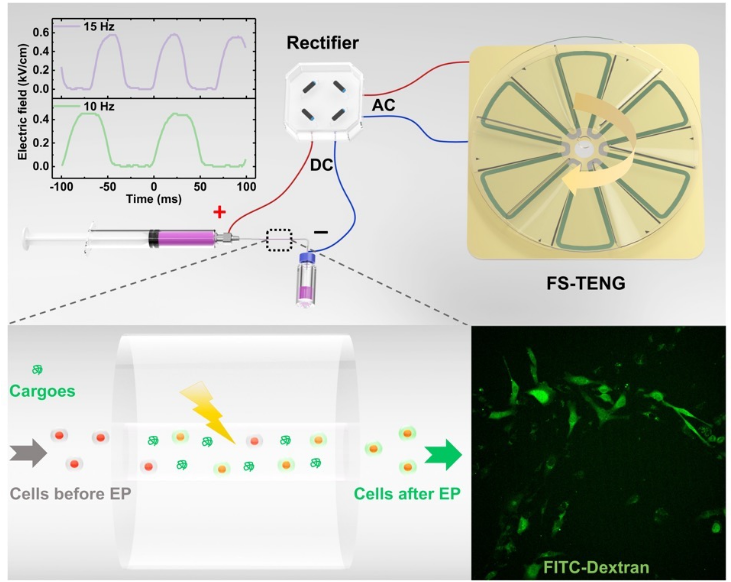

I am a postdoctoral associate in Mechanical Engineering at MIT, working with Prof. Ming Guo and Prof. Roger D. Kamm. I received my Ph.D. in Mechanical Engineering from MIT in 2024, advised by Prof. Guo.
My work integrates mechanics, biophysics, and bioengineering to understand living tissues as systems of cells and fluid. I combine custom micromechanics instruments, imaging, and computational modeling to measure how tissues deform, relax, and transport fluid.
My long-term goal is to connect tissue structure, mechanics, and transport to biological function, and use these relationships to build quantitative models of cancer and brain aging.
How do mechanics and fluid transport shape tissue function?
My research brings together engineering tools, physical mechanisms, and tissue models. The goal is to make the physical state of living tissues measurable and interpretable, and ultimately use that knowledge to build better models of health and disease.
My doctoral research showed that fluid flow between cells can dominate how multicellular tissues relax after deformation. By combining mechanical measurements, imaging, and physical models, I connected tissue response to the spaces through which fluid moves. This work establishes a physical basis for investigating how changes in tissue organization alter mechanics and transport.
Green: fluid tracer (FD4); red: cell membranes; blue: nuclei. These complementary tracer experiments visualize intercellular transport. The efflux movie uses an osmotic perturbation, rather than mechanical compression. Supplementary Fig. 9.
02 · Engineering tools for measurement & control
How can we quantitatively probe and manipulate living systems?
I develop instruments that connect physical inputs to biological measurements and manipulation. My micromechanics platform combines controlled deformation, sensitive force measurement, and microscopy to quantify how living tissues respond to forces. Earlier work used triboelectric nanogenerators to power intracellular delivery and cell printing. Together, these projects establish an engineering foundation for measuring and manipulating biological systems.

Micromechanics platform: deformation, structure, and force. View figure ↗
A549 spheroid compression
Controlled compression and release, recorded by side-view microscopy.
During the hold: the probe position stays fixed after compression, while the microbalance records a decrease in force. This decay is force relaxation. The later release removes the compression and allows the tissue to recover.
During my master’s and doctoral research, I used triboelectric nanogenerators to convert mechanical motion into electrical stimulation. This enabled bulk electroporation for intracellular cargo delivery and electro-assisted printing of cell-laden hydrogel microspheres. These projects established my approach to developing physical tools for biological manipulation.

Intracellular delivery
Mechanical stimulation powers electroporation to introduce molecular cargo into cells.
Mechanical motion drives electro-assisted production of cell-laden hydrogel microspheres, with potential applications in transplantation and drug delivery.
How can tissue models connect physical changes to biological dysfunction?
Engineered tissue models offer a way to investigate biological processes under controlled conditions. My emerging research direction will bring measurements of mechanics and fluid transport into these systems to test how changes in tissue organization affect function. This connects the tools and physical mechanisms above to questions in cancer and brain aging.
Published collaboration
Vascularized tumor organoids-on-a-chip
I contributed to collaborative work on vascularized tumor organoids-on-a-chip for studying tumor–vascular interactions and treatment response. This provides a foundation in engineered models of disease.
My future program will pair measurements of tissue deformation, relaxation, and transport with biological readouts, testing which physical changes reflect altered function in controlled tissue models.
Long-term goal: Evaluate mechanical and transport properties as potential markers of tissue dysfunction and as design parameters for reproducible models of health and disease.
J. Cheng, W. Ding, Y. Zi, Y. Lu, L. Ji, F. Liu, et al.
Nature Communications 9, 3733 (2018).
04
Teaching & service
From fundamental mechanics to biological applications.
My teaching experience spans undergraduate and graduate engineering courses at MIT and Tsinghua University. My teaching interests include solid and fluid mechanics, transport phenomena, computational methods, and biomechanics.
Teaching assistant · MIT
Mechanics and Materials I Undergraduate
Spring 2024, 2025
Fluid Mechanics Graduate
Fall 2020, 2021, 2023
Mechanics of Solid Materials Graduate
Spring 2023, 2024
Intermediate Heat and Mass Transfer Undergraduate
Fall 2021, 2022, 2023
Introduction to Finite Element Methods Undergraduate
Spring 2021, 2023
Tsinghua University
Teaching assistant for Numerical Analysis (graduate, Fall 2017) and Mechanical Design Basis (undergraduate, Spring 2018).
Professional service
Journal reviewer for Applied Physics Letters, Biophysics Reviews, Nano Energy, Bioprinting, and other journals.
05
Invited talks
Fluid Transport and Mechanics in Living Tissues: From Physical Principles to Disease
Nanyang Technological University · School of Mechanical and Aerospace Engineering · Virtual seminar